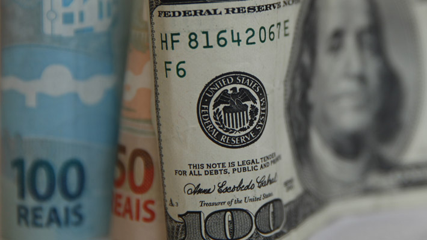
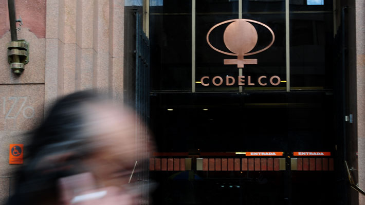
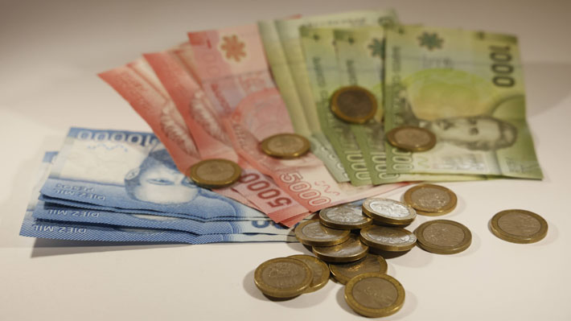

Dólar revierte fuerte alza ante repunte del cobre pese a incertidumbre por Medio Oriente
Categoría: Internacional
El dólar cerró la jornada de este viernes con una baja de $5,90 frente al peso, revirtiendo las fuertes alzas observadas durante la apertura de la jornada. En concreto, el billete verde terminó sus operaciones más líquidas en $923,50 vendedor y $923,20 comprador. En comparación con el cierre de la semana pasada, la divisa estadounidense registró una reducción semanal de $3,50. Al respecto, Felipe Sepúlveda, jefe de análisis para Admirals Latinoamérica, explicó que "el tipo de cambio cedió terreno debido a un factor clave: el repunte del cobre". "El metal avanzó 0,58% hasta US$5,50 la libra tras la apertura de Wall Street, lo que fortaleció al peso chileno y compensó la presión externa", añadió Sepúlveda. Liza Salinas, branch business director de Liberty Finance, señaló que "de cara a la próxima semana, el tipo de cambio seguirá atado a dos variables: la evolución del conflicto en Oriente Medio y los datos de empleo e inflación en EE.UU. que se publican este viernes".

Codelco gana US$2.423 millones en 2025 por impacto de acuerdo con SQM y aporte al fisco crece 16%
Categoría: Nacional
La empresa estatal Codelco dio a conocer sus resultados financieros correspondientes a 2025. En el ejercicio logró una mejora relevante en sus indicadores, una producción levemente superior y un mayor aporte al fisco, que creció 16% respecto al año anterior. En términos de utilidades, la cuprífera reportó ganancias por US$2.423 millones al cierre del año. Sin embargo, este resultado estuvo fuertemente influido por un efecto extraordinario asociado a la adquisición de su participación en el negocio del litio —tras el acuerdo con SQM que dio origen a la empresa conjunta NovaAndino- que aportó US$2.035 millones después de impuestos. Sin considerar este impacto, la utilidad ajustada alcanzó US$388 millones, lo que representa un incremento de 58% respecto de 2024.

Buses, operadores logísticos, agro, gas: Sectores cifran el traspaso de alzas de combustibles a precios
Categoría: Transporte
El alza en los precios de los combustibles significará un duro impacto para el bolsillo de los chilenos, golpeará a distintos sectores productivos y a toda la cadena de abastecimiento. Para intentar paliar esto, el Congreso despachó en solo dos días una ley impulsada por el Gobierno que establece el congelamiento del precio de la parafina y un bono mensual de $100 mil para dueños de taxis. Sin embargo, eso no evitará que los mayores costos para la producción que significa un combustible notoriamente más caro se traspase a los consumidores. La industria del gas es parte de los sectores desde donde se ha transparentado este efecto, particularmente la empresa Abastible, que proyecta un aumento cercano al 10% a partir del 2 de abril. "La compañía estima un incremento cercano al 10% desde el 2 de abril, significativamente inferior a los aumentos del diésel y gasolinas, en un contexto de alta volatilidad internacional", explicó Sebastián Montero Morán, gerente del negocio GL Chile.
